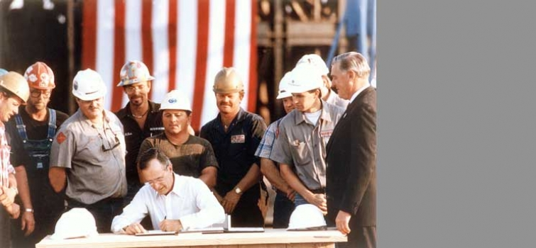
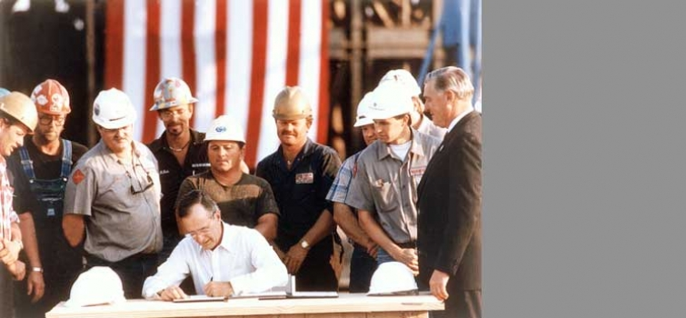

-

Workers complete drilling of the five-mile long, horseshoe-shaped exploratory tunnel through Yucca Mountain.
- 
President Bush signs the Energy Policy Act of 1992, which assists the implementation of the National Energy Strategy.

Secretary Richardson dedicates the National Ignition Facility target chamber at DOE's Lawrence Livermore National Laboratory.
- 
Return to Timeline of Events: 1981 to 1990
Continue to Timeline of Events: 2001
January 16-17, 1991
United Nations coalition forces launch Operation Desert Storm when Saddam Hussein refuses to withdraw from Kuwait.
February 1991
The Complex Reconfiguration Committee, formerly the Modernization Review Board, releases its recommendations for a reconfigured weapon complex, Complex-21.
February 20, 1991
President Bush presents the Department's National Energy Strategy to Congress and the American people.
March 4, 1991
Secretary Watkins transmits the Administration's energy bill to the House and Senate.
July 31, 1991
President Bush signs the Strategic Arms Reduction Treaty (START), which will reduce nuclear weapon stockpiles to 6,000 "accountable" warheads.
September 27, 1991
President Bush announces additional unilateral cuts in the nuclear weapon arsenal.
May 10, 1992
Secretary Watkins testifies before the Senate Armed Services Committee that for the first time since 1945 the United States is not building any nuclear weapons.
June 1992
Representatives from many nations attend the Earth Summit in Rio de Janeiro.
September 23, 1992
The United States conducts its last underground nuclear weapons test. Congress imposes a temporary moratorium on nuclear weapons testing.
October 24,1992
President Bush signs the Energy Policy Act of 1992, which assists the implementation of the National Energy Strategy.
November 3, 1992
William Clinton is elected president.
January 22, 1993
Hazel R. O'Leary is sworn in as seventh Secretary of Energy.
April 21, 1993
President Clinton announces that the United States will stabilize greenhouse gas emissions at 1990 levels by the year 2000.
July 3, 1993
President Clinton extends the nuclear weapons testing moratorium for at least fifteen months.
October 1993
Congress votes to terminate the Superconducting Super Collider.
October 19, 1993
President Clinton and Vice President Gore unveil The Climate Change Action Plan, emphasizing voluntary measures to stabilize greenhouse gas emissions.
December 7, 1993
Secretary O’Leary announces an "openness" initiative to lift the veil of secrecy from past nuclear activities, revealing that one-fifth of the nation’s nuclear weapons tests had been kept secret, identifying locations and quantities of weapons grade plutonium, providing information about fusion energy, and documenting the large quantities of mercury used in weapons production.
November 23, 1994
The Department announces the completion of a highly classified interagency operation to transfer weapons grade highly enriched uranium out of Kazakhstan to DOE's Y-12 Plant at Oak Ridge, Tennessee.
March 25, 1995
Physicists at DOE's Fermi National Accelerator Laboratory announce the discovery of the subatomic particle called the top quark, the last undiscovered quark of the six predicted to exist by current scientific theory.
July 5, 1996
Vitrification in glass canisters of highly radioactive liquid wastes begins at the West Valley Demonstration Project in upstate New York.
December 9, 1996
The Department unveils a dual-track strategy to dispose of the nation's surplus plutonium.
December 19, 1996
Secretary O'Leary signs Record of Decision for stockpile stewardship, finalizing plans for a smaller, more efficient weapons complex.
March 12, 1997
Federico F. Pena is sworn in as eighth Secretary of Energy.
March 28, 1997
The Clinton administration releases the Building Public Trust: Actions to Respond to the Report of the Advisory Committee on Human Radiation Experiments.
April 25 1997
Workers complete drilling of the five-mile long, horseshoe-shaped exploratory tunnel through Yucca Mountain at the proposed high-level nuclear waste repository in Nevada.
May 29, 1997
Secretary Pena participates in the ground breaking ceremony for the National Ignition Facility, a centerpiece of the stockpile stewardship program, at the Lawrence Livermore National Laboratory.
June 20, 1997
The Plutonium Uranium Extraction Facility (PUREX), the largest of the Nation's Cold War plutonium processing plants, is deactivated a year ahead of schedule.
July 2, 1997
The first "subcritical" physics experiment at the Nevada Test Site, code-name "Rebound," provides scientific data on the behavior of plutonium without underground nuclear-weapons testing.
December 4, 1997
Secretary Pena signs an agreement that will lead to U. S. participation in the Large Hadron Collider, a particle accelerator under construction at CERN, near Geneva, Switzerland.
December 22, 1997
Secretary Pena announces further actions to ensure the DOE openness initiative becomes business-as-usual.
January 22, 1998
The Department of Energy announces that it will dispose of defense-generated transuranic waste at the Waste Isolation Pilot Plant (WIPP) in southeastern New Mexico.
February 3, 1998
President Clinton visits Los Alamos National Laboratory to speak about the importance of the Department's stockpile stewardship program to ratification of the Comprehensive Test Ban Treaty
February 5, 1998
The Department of Energy and Occidental Petroleum Corporation sign final papers for the sale of the United States interest in the Elk Hills Naval Petroleum Reserve. This transfer concludes the largest divestiture of federal property in the history of the U. S. government.
May 11-13, 1998
India explodes several nuclear devices
May 28-30, 1998
Pakistan explodes several nuclear devices.
July 31, 1998
The Senate unanimously confirms the nomination of Bill Richardson as Secretary of Energy.
August 15, 1998
The Department completes the sale of the Alaska Power Administration with the transfer of the Snettisham hydroelectric project to the Alaska Industrial Development and Export Authority. The Eklutna hydroelectric project was sold to three local utility users in 1997.
August 18, 1998
Bill Richardson is sworn in as ninth Secretary of Energy. He makes history while briefly serving in two cabinet posts at once -- both as Secretary of Energy and U. S. ambassador for the United Nations -- for several weeks.
August 26, 1998
The Department's Uranium Mill Tailings Remedial Action (UMTRA) Project comes to a successful end with the remediation of the 22nd and final site at Maybell, Colorado.
September 21, 1998
Secretary Richardson, addressing the 42nd session of the General Conference of the International Atomic Energy Agency, lists six legacies from the first half century of the nuclear age and the steps the U. S. is taking to resolve them.
September 22, 1998
Secretary Richardson and Russian Minister of Atomic Energy Yevgeny Adamov sign two agreements, one designed to facilitate the development of commercial enterprises for Russia's 10 nuclear cities and the other concerning Russian conversion of highly-enriched uranium from nuclear weapons into low-enriched uranium for use as fuel in commercial reactors in the U. S.
September 22, 1998
Secretary Richardson in Vienna signs an agreement with Russia, the European Union, and Japan that will end U. S. participation in the International Thermonuclear Experimental Reactor (ITER) project by July 1999.
October 19, 1998
The Department announces the award of a contract that will result in the world's first high temperature superconductor (HTS) power cable to deliver electricity in a utility network owned by Detroit Edison.
October 28, 1998
The Clinton administration unveils IBM's Pacific Blue computer at Lawrence Livermore National Laboratory. Pacific Blue is a key component of the Department's Accelerated Strategic Computing Initiative, which simulates nuclear weapons behavior without testing.
November 20, 1998
As part of the Atmospheric Radiation Measurement (ARM) program, DOE opens a long-term climate research station on Nauru in the central Pacific on the eastern edge of the ocean's "warm pool," an area that consistently produces the warmest sea surface temperatures in the world.
November 20, 1998
The Department announces the Workforce for the 21st Century Initiative (Workforce 21) designed to recruit technical and management staff with skills to match changing mission requirements.
December 18, 1998
The Department submits the viability assessment of the Yucca Mountain site to President Clinton and Congress. The Department reports that 15 years of research reveals no "show stoppers" to disqualify the site but notes that certain critical issues should continue to be studied.
December 22, 1998
The Department certifies to the President that the nation's nuclear stockpile is safe, secure, and reliable.
December 22, 1998
Secretary Richardson selects the Tennessee Valley Authority Watts Bar and Sequoyah reactors as the preferred facilities for producing a future supply of tritium for nuclear weapons.
December 22, 1998
The Department announces that Savannah River will be the site of a plant that will disassemble pits from nuclear weapons and convert the recovered metal to an oxide, beginning a process of destroying rather than creating weapons-grade plutonium.
February 18, 1999
Secretary Richardson commits to a revision of DOE's 1992 American Indian policy, which was the first between DOE and the tribes. The new approach is aimed at improving communications, improving Native American quality of life, and strengthening tribal governments.
February 26, 1999
Experimental operations begin on the National Spherical Torus Experiment (NSTX) at DOE's Princeton Plasma Physics Laboratory (PPPL).
March 3, 1999
Secretary Richardson directs DOE's laboratories to pool their expertise in nuclear-related design, production, and technology in a joint effort to develop new tools and methods in the study of nuclear proliferation, including biological and chemical threats.
March 3, 1999
The Department reaches an agreement with Ministry of Atomic Energy Minister Yevgeny Adamov and activates a contract between MinAtom and a consortium of private companies to advance the Highly-Enriched Uranium Purchase Agreement.
March 17, 1999
The Department receives recommendations of the Chiles Commission report dealing with retaining and attracting talent to maintain the nuclear weapons stockpile.
March 18, 1999
President Clinton, in response to allegations of the theft of nuclear secrets at the Los Alamos National Laboratory, requests the President's Foreign Intelligence Advisory Board to investigate and issue a report on the security threat at the Department of Energy's nuclear weapons laboratories. Secretary Richardson opens the Consumer Information Office, designed to improve the delivery of DOE products and services to a wider audience and to include consumer viewpoints in DOE policy decisions.
March 26, 1999
After more than two decades of political, legal, and bureaucratic delays, the first truckload of radioactive waste from Los Alamos National Laboratory arrives at the DOE Waste Isolation Pilot Plant (WIPP) in southeastern New Mexico, 26 miles east of Carlsbad.
April 1, 1999
Secretary Richardson announces DOE's Africa Initiative, designed to promote African economic development and private investment in Africa's energy sector.
April 2, 1999
Secretary Richardson orders a stand down of most classified computers at Lawrence Livermore, Los Alamos, and Sandia National Laboratories for security upgrades and worker training.
April 27, 1999
The Department of Energy and the Department of Interior launch the Green Energy Parks Program, designed to increase the use of sustainable energy technology in the nation's parks.
May 11, 1999
Secretary Richardson announces a zero tolerance security policy and establishes the Office of Security and Emergency Operations, which will consolidate all safeguards and security policy, computer protection, and emergency operations throughout DOE.
May 30, 1999
Deputy Secretary T. J. Glauthier leads an official delegation to the Ukraine. The trip includes a dedication and demonstration of the Pioneer robot designed to collect data inside Chernobyl Unit 4 in areas too contaminated for safe human access.
June 3, 1999
President Clinton issues Executive Order 13123 setting new goals for federal energy management, with DOE's Federal Energy Management Program designated as the federal government's program coordinator.
June 11, 1999
Secretary Richardson dedicates the National Ignition Facility target chamber at DOE's Lawrence Livermore National Laboratory.
June 15, 1999
The President's Foreign Intelligence Advisory Board issues its report, Science at Its Best, Security at Its Worst, commonly referred to as the Rudman report.
Advocating the creation of a semi-autonomous security agency within the Department, the report specifically rejects the idea that DOE's weapons laboratories be transferred to the Department of Defense.
June 16, 1999
Retired Air Force General Eugene E. Habiger, previously head of the Strategic Air Command, is named Director of the Office of Security and Emergency Operations. Secretary Richardson designates him DOE's "security czar".
June 21, 1999
The Department announces the Wind Powering America initiative, designed to significantly increase the use of wind power in the United States over the next ten years.
June 21-22, 1999
The Department conducts two-day security immersion programs at Lawrence Livermore, Los Alamos, and Sandia National Laboratories.
June 30, 1999
Save America's Treasures, a national public-private effort between the White House Millennium Council and the National Trust for Historic Preservation, awards DOE $1.02 million to help preserve historically significant structures at Los Alamos National Laboratory and the Idaho National Engineering and Environmental Laboratory.
July 14, 1999
Secretary Richardson issues revised procedures for unclassified visits and assignments by foreign nationals to the Department of Energy's national laboratories and other facilities.
July 15, 1999
Secretary Richardson announces an administration proposal to help current and former DOE contract workers who developed medical problems resulting from exposure to beryllium while working at DOE nuclear facilities.
August 3, 1999
At Secretary Richardson's direction, all DOE facilities participate in a compulsory security stand down to convene a day-long program of security training and education focusing on counterintelligence, security, and cyber-security measures.
August 8, 1999
The Washington Post reports that workers at DOE's Paducah, Kentucky, gaseous diffusion plant were unknowingly exposed to plutonium that was contained in uranium sent from Hanford and Savannah River for recycling between 1952 and 1976.
September 3, 1999
Secretary Richardson reports that the National Ignition Facility is over budget and behind schedule and announces project management changes.
September 8, 1999
Secretary Richardson orders a one-day safety stand down at DOE's Paducah site to strengthen and enhance safety programs at the site.
September 10, 1999
Secretary Richardson signs agreements with the governors of Tennessee, Colorado, South Carolina, and Washington to improve intergovernmental cooperation and to recommit DOE to seeking "predictable and adequate" funding to meet its cleanup responsibilities.
September 16, 1999
Secretary Richardson proposes legislation to compensate current and former contract employees at uranium enrichment facilities for cancers resulting from exposure to radioactive contaminants. Sites included are Paducah, Kentucky; Oak Ridge, Tennessee; and the Portsmouth plant in Piketon, Ohio.
September 18, 1999
The world's largest wind power facility, utilizing turbines developed and tested jointly by DOE and Enron Wind Corporation, is dedicated in Storm Lake, Iowa, as part of the Department's Wind Powering America Initiative.
September 23, 1999
Department of Energy-funded researchers win 43 of the R&D 100 Awards for the top technological achievements of the year. The awards are presented annually by R&D Magazine to recognize the year's most outstanding technological developments with commercial potential. This year's awards brings DOE's cumulative total to 529, the most, by far, of any single organization and twice as many as all other government agencies combined.
October 1, 1999
The Open Computing Center in Sarov (formerly Arzamas-16, birthplace of the Soviet atomic bomb) opens as a Nuclear Cities Initiative, capable initially of employing approximately 100 former weapons specialists.
October 5, 1999
President Clinton signs the FY-2000 Defense Authorization Act establishing the Nation Nuclear Security Administration within the Department. A new Under Secretary for Nuclear Security will be responsible for managing the DOE defense complex.
October 13, 1999
The Senate votes 48-51 to reject the Comprehensive Test Ban Treaty.
November 16, 1999
Secretary Richardson announces that the High Flux Beam Reactor at the Brookhaven National Laboratory will be closed permanently.
December 10, 1999
The Department designates the Federal Energy Technology Center as DOE's newest national laboratory, to be known as the National Energy Technology Laboratory (NETL). Located 65 miles apart but commonly managed in Morgantown, West Virginia, and Pittsburgh, Pennsylvania, the laboratory is the nation's largest fossil energy research organization.
December 15, 1999
The ground breaking ceremony is held at Oak Ridge National Laboratory for the $1.36 billion Spallation Neutron Source (SNS) project for neutron scattering and related research in the physical, chemical, materials, biological, and medical sciences. The SNS is a partnership of five DOE laboratories--Oak Ridge, Argonne, Brookhaven, Lawrence Berkeley, and Los Alamos.
December 31, 1999
Department of Energy staff and U. S. industry experts work around the clock during the transition to the year 2000 monitoring the U. S. electrical, oil, and gas industries.
January 14, 2000
Secretary Richardson announces the return of 90,000 acres of oil-rich lands to the Northern Ute Tribe, one of the largest voluntary returns of Indian lands ever.
The agreement also covers cleanup and removal of 10.5 million tons of radioactive uranium mill tailings.
February 28, 2000
The Department of Energy and the American Institute of Architects announce a national design competition for the largest solar energy system on a U. S. federal government building and one of the largest such systems in the world. The "Sun Wall" at the Department's Forrestal building spans nearly two-thirds of an acre and is currently blank.
March 1, 2000
The Department activates the National Nuclear Security Administration (NNSA), meeting the statutory deadline established by the FY 2000 defense authorization act. NNSA's mission is to carry out the national security responsibilities of the Department of Energy, including maintenance of a safe, secure, and reliable stockpile of nuclear weapons and associated materials, capabilities, and technologies; promotion of international nuclear safety and nonproliferation; and administration and management of the naval nuclear propulsion program. The agency includes the former Offices of Defense Programs, Nonproliferation and National Security, and Naval Reactors.
March 2, 2000
President Clinton nominates General John A. Gordon to serve as the Department's Under Secretary for Nuclear Security and Director of the National Nuclear Security Administration.
April 10, 2000
The Department holds a diversity stand down to emphasize the importance of racial sensitivity and diversity in the workforce. The stand down results from a recommendation by the task force on racial profiling.
April 12, 2000
Secretary Richardson announces an expanded administration proposal to compensate more than 3,000 current and former workers with a broad range of work-related illnesses throughout the DOE nuclear weapons complex. The legislation proposes to give lump sum financial benefits or a package of benefits, to include lost wages, medical expenses, and job retraining, to workers with illnesses caused from breathing particles of beryllium, workers with cancers caused by workplace radiation exposure, and specific groups of workers at the Department's Paducah, Portsmouth, and Oak Ridge sites.
April 22, 2000
The Department participates in Earth Day 2000, the 30th anniversary of Earth Day. The global theme is Clean Energy Now. Power for the event, which draws 300,000 to the mall, is provided entirely by renewable energy sources. The Department issues a statement in conjunction with Earth Day reporting that energy use in federal buildings has decreased 20% since 1985.
April 2000
Secretary Richardson holds meetings in numerous oil-producing countries trying to convince them to increase production and halt rising prices in the oil market. Following an OPEC decision to increase production, the Energy Information Administration projects lower gasoline prices for summer.
May 4, 2000
A prescribed burn to clear brush at Bandelier National Monument in New Mexico quickly burns out of control and becomes the largest-ever fire in the state.
The fire enters Los Alamos Canyon on May 10, leading to evacuations and the closing of Los Alamos National Laboratory. Air monitoring by LANL indicates no releases of radiation as the fire sweeps through 9,000 acres of LANL property.
May 19, 2000
Secretary Richardson announces a new contract reform initiative intended to hold contractors as well as DOE managers who supervise contractors more accountable. The initiative includes provisions to strengthen the Department's ability to sanction poor contractor performance and reward outstanding performance.
The reforms extend efforts from the early 1990s moving the Department away from "cost plus" contracts to performance based contracts. The Department's 30 major contracts are valued at $50 billion over ten years.
June 26, 2000
President Clinton and British Prime Minister Tony Blair announce that the International Human Genome Project and Celera Genomics Corporation have completed a working draft of 95% of the human genetic structure. DOE scientists began the Human Genome Project in 1986 to explore newly developing DNA analytical technologies. The National Institutes of Health joined the project in 1988, and a joint effort was formally announced in 1990. In addition to DOE and NIH, the international project includes scientists at 16 institutions in France, Germany, Japan, China, Great Britain, and the United States.
June 27, 2000
A traffic accident near the west gate of the Hanford Site produces a fire that burns 192,000 acres of desert vegetation, destroys homes and other buildings in Benton City and West Richland, and comes within a half-mile of high-level radioactive waste buried at the site.
June 28, 2000
Following his June 14 confirmation, General John A. Gordon is sworn in as the department's first Under Secretary for Nuclear Security and Administrator of the National Nuclear Security Administration.
June 2000
Congressional scrutiny of DOE security intensifies when computer disk drives containing classified information disappear at Los Alamos National Laboratory.
June-July 2000
The Energy Information Administration revises estimates of oil and other energy prices upward following a short-lived downturn resulting from increased OPEC production in April.
July 21, 2000
The Direct Observation of the Nu Tau (DONUT) experiment, a collaboration of 54 physicists from the U. S., Japan, Korea, and Greece, announces that Fermilab's Tevatron accelerator has produced the first direct evidence of the subatomic particle called the tau neutrino, the third neutrino of the Standard Model of elementary particles, a theoretical description of the building blocks of nature that groups all particles into three generations. The first-generation electron neutrino was discovered in 1956 at Savannah River, while the second-generation neutrino was found in 1962 at Brookhaven National Laboratory.
August 28, 2000
The Department announces that Compaq Computer will build the world's fastest supercomputer at Los Alamos National Laboratory by 2002. The computer, ASCI Q (Accelerated Strategic Computing Initiative) will be part of the Department's Stockpile Stewardship Program and will be used to help verify that warheads in the stockpile are reliable without physical testing. The $200 million computer will operate faster than the combined speeds of the next 21 fastest machines currently in operation and process as much information daily as 20,000 personal computers.
September 1, 2000
After two years of negotiations, Vice President Gore and Russian Prime Minister Mikhail Kasyanov sign an agreement to dispose of 68 metric tons (34 metric tons for each country) of weapons grade plutonium. Under the agreement, the surplus plutonium will be irradiated in nuclear reactors or by immobilizing it with high-level radioactive waste. The agreement includes arranging international financing for Russia to develop and implement disposition technologies.
September 6, 2000
Secretary Richardson extends workplace diversity efforts by announcing initiatives aimed at increasing recruitment and retention of women, who currently make up 15 percent of DOE's federal workforce.
September 22, 2000
Citing low inventories resulting from the high price of crude oil, President Clinton directs the Department of Energy to exchange 30 million barrels of crude oil from the Strategic Petroleum Reserve to bolster supplies of home heating oil, particularly on the East Coast and in New England. This is the first large-scale use of the SPR to avoid a possible supply shortage since President Bush mobilized the SPR during Operation Desert Storm in 1991.
September 30, 2000
The Department releases its Strategic Plan, "Strength Through Science, Powering the 21st Century." The Plan defines the missions, objectives, and long-term performance goals of the agency and outlines how the Department will increase productivity and accountability.
October 9, 2000
The Energy Information Administration estimates that Americans will pay 12 percent to 50 percent more for home heating oil this winter than a year ago, with customers relying on the predominant fuel--natural gas--paying the most. The higher prices will result from an anticipated 10 percent increase in demand if weather is normal and higher feedstock costs. The EIA projects no fuel shortages, though "consumers might not like the price they have to pay."
November 7, 2000
The presidential election between Vice President Al Gore and Governor George W. Bush of Texas is one of the closest in American history. Neither candidate is able to win the 270 electoral votes required for victory as the exceedingly close popular vote in Florida temporarily prevents the state's electoral votes from being awarded. Not until December 13 does Vice President Gore concede the election to Governor Bush.
November 22, 2000
As part of the broader effort to improve emergency preparedness at DOE nuclear weapons sites, Secretary Richardson announces the establishment of a fire advisory commission under the Federal Advisory Committee Act. A DOE team will provide the commission with information regarding the current state of emergency preparedness at the sites, which the commission will use to evaluate potential improvements. The Department will also formalize an agreement with the Departments of Agriculture and Interior to prepare fire prevention and emergency response measures.
November 28, 2000
The Department decides to close the Fast Flux Test Facility at Hanford permanently. The decision is the preferred alternative identified in the Nuclear Infrastructure Programmatic Environmental Impact Statement ordered by Secretary Richardson in 1998. While the Department anticipates a growing need for medical and industrial isotopes, plutonium-238 to support NASA space missions, and civilian nuclear research and development activities, the Department plans to meet these primarily by using non-DOE facilities.
December 14, 2000
Secretary Richardson, issues an order, pursuant to Section 202 (c) of the Federal Power Act, to require electricity generators and marketers to make power available in power-strapped California.
Return to Timeline of Events: 1981 to 1990
Continue to Timeline of Events: 2001